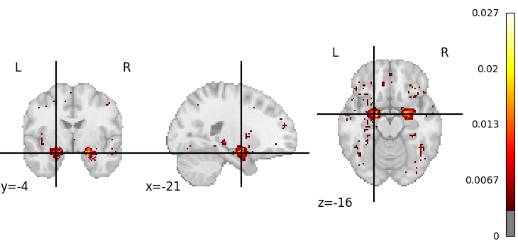

Note
Click here to download the full example code
Example where a spatial prior is defined based on the distance between voxels and foci in a coordinate-based meta-analysis database¶
Each voxel’s probability of being reported by a study is calculated based on whether that particular study reports a focus (peak activation) near the voxel. The probability is defined based on how far from the focus that voxel happens to be.
from typing import Callable, Iterable
import nibabel
import nilearn.datasets
import nilearn.image
import nilearn.plotting
import numpy as np
import pandas as pd
from neurolang.frontend import ExplicitVBR, ExplicitVBROverlay, NeurolangPDL
# ##############################################################################
# Data preparation
# ----------------
# ##############################################################################
# Load the MNI atlas and resample it to 4mm voxels
mni_t1 = nibabel.load(nilearn.datasets.fetch_icbm152_2009()["t1"])
mni_t1_4mm = nilearn.image.resample_img(mni_t1, np.eye(3) * 2)
# ##############################################################################
# Probabilistic Logic Programming in NeuroLang
# --------------------------------------------
nl = NeurolangPDL()
# ##############################################################################
# Adding new aggregation function to build a region overlay
# ----------------------------------
@nl.add_symbol
def agg_create_region_overlay(
i: Iterable, j: Iterable, k: Iterable, p: Iterable
) -> ExplicitVBR:
voxels = np.c_[i, j, k]
return ExplicitVBROverlay(
voxels, mni_t1_4mm.affine, p, image_dim=mni_t1_4mm.shape
)
# ##############################################################################
# Loading the database
# ----------------------------------
ns_database_fn, ns_features_fn = nilearn.datasets.utils._fetch_files(
"neurolang",
[
(
"database.txt",
"https://github.com/neurosynth/neurosynth-data"
"/raw/master/current_data.tar.gz",
{"uncompress": True},
),
(
"features.txt",
"https://github.com/neurosynth/neurosynth-data"
"/raw/master/current_data.tar.gz",
{"uncompress": True},
),
],
)
ns_database = pd.read_csv(ns_database_fn, sep="\t")
ijk_positions = np.round(
nibabel.affines.apply_affine(
np.linalg.inv(mni_t1_4mm.affine),
ns_database[["x", "y", "z"]].values.astype(float),
)
).astype(int)
ns_database["i"] = ijk_positions[:, 0]
ns_database["j"] = ijk_positions[:, 1]
ns_database["k"] = ijk_positions[:, 2]
ns_database = ns_database[["i", "j", "k", "id"]]
ns_features = pd.read_csv(ns_features_fn, sep="\t")
ns_docs = ns_features[["pmid"]].drop_duplicates()
ns_terms = pd.melt(
ns_features, var_name="term", id_vars="pmid", value_name="TfIdf"
).query("TfIdf > 1e-3")[["term", "pmid"]]
TermInStudy = nl.add_tuple_set(ns_terms, name="TermInStudy")
FocusReported = nl.add_tuple_set(ns_database, name="FocusReported")
SelectedStudy = nl.add_uniform_probabilistic_choice_over_set(
ns_docs, name="SelectedStudy"
)
Voxel = nl.add_tuple_set(
np.hstack(
np.meshgrid(
*(np.arange(0, dim) for dim in mni_t1_4mm.get_fdata().shape)
)
)
.swapaxes(0, 1)
.reshape(3, -1)
.T,
name="Voxel",
)
# ##############################################################################
# Probabilistic program and querying
# ----------------------------------
nl.add_symbol(np.exp, name="exp", type_=Callable[[float], float])
with nl.environment as e:
(e.VoxelReported @ e.max(e.exp(-e.d / 5.0)))[e.i1, e.j1, e.k1, e.s] = (
e.FocusReported(e.i2, e.j2, e.k2, e.s)
& e.Voxel(e.i1, e.j1, e.k1)
& (e.d == e.EUCLIDEAN(e.i1, e.j1, e.k1, e.i2, e.j2, e.k2))
& (e.d < 1)
)
e.TermAssociation[e.t] = e.SelectedStudy[e.s] & e.TermInStudy[e.t, e.s]
e.Activation[e.i, e.j, e.k] = (
e.SelectedStudy[e.s] & e.VoxelReported[e.i, e.j, e.k, e.s]
)
e.probmap[e.i, e.j, e.k, e.PROB[e.i, e.j, e.k]] = (
e.Activation[e.i, e.j, e.k]
) // e.TermAssociation["emotion"]
e.img[e.agg_create_region_overlay[e.i, e.j, e.k, e.p]] = e.probmap[
e.i, e.j, e.k, e.p
]
img_query = nl.query((e.x,), e.img[e.x])
# ##############################################################################
# Plotting results
# --------------------------------------------
result_image = img_query.fetch_one()[0].spatial_image()
img = result_image.get_fdata()
plot = nilearn.plotting.plot_stat_map(
result_image, threshold=np.percentile(img[img > 0], 95)
)
nilearn.plotting.show()
Total running time of the script: ( 0 minutes 38.964 seconds)